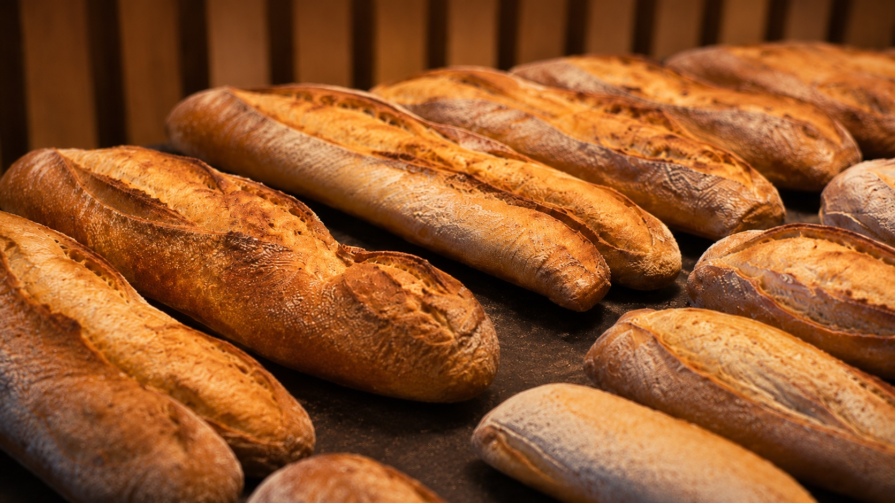

Pâtisserie traditionnelle
Éclairs, saint-honorés, tartes aux fruits, flans, macarons garnis. Les classiques français, avec le même soin de finition que nos créations les plus spectaculaires.

Avant d'être une maison de trompe-l'œil, nous sommes une boulangerie pâtisserie. Le pain du matin, l'éclair de quatre heures et le déjeuner sur le pouce comptent autant que le reste.
Éclairs, saint-honorés, tartes aux fruits, flans, macarons garnis. Les classiques français, avec le même soin de finition que nos créations les plus spectaculaires.
Baguettes de tradition, pains spéciaux, croissants, roulés et palmiers. Façonnés et cuits sur place, tout au long de la journée.
Sandwichs, focaccias, parts salées et plats du jour pour le déjeuner. À emporter, ou à savourer en terrasse avec un café.
Pains spéciaux, plateaux salés, tartes et gâteaux : réservez à l'avance et passez simplement les récupérer.